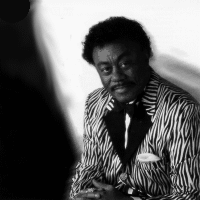
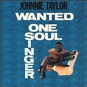

 |
Johnnie TAYLOR
5 мая 1938г., Крауфордсвилль, Арканзас -
- 31 мая 2000г., Даллас, Техас, США
Джонни ТЕЙЛОР - американский соулблюзовый певец, автор ряда соулблюзовых и диско-хитов.
(не путать с Little Johnny Taylor) |
Дебютировал как госпелл-певец. В 1957 году заменил своего учителя Сэма Кука (Sam Cooke) в госпел-группе "Трогающие душу" ("Soul Stirrers"), с которой сделал свои первые записи и в которой работал до 1963 года. В 1962 году выпустил дебютный сингл с песней сочинения С.Кука. В качестве солиста подписал контракт с фирмой "Sar", основанной С.Куком. После смерти С.Кука в 1964г. перешел на известнейшую мемфисскую фирму "Стакс" ("Stax"), для которой записал свои первые ритэндблюзовые хиты, включая свой первый #1 "Who's Makin' Love", проданный тиражом более 1 000 000экз. К этому времени он превратил госпелл в основу своего соул-стиля. В начале 70х "Стэкс" обанкротилась и Дж.Тейлор перешел на мажор-фирму "Коламбиа"(Columbia). Его песни постоянно входили в первую ритмэндблюзовую десятку чартов, а самым большим успехом стала "Disco Lady", ставшая платиновой на заре диско-лихорадки. Танцевальные диско-фанк песни Дж.Тейлор продолжал записывать до начала 80-х. Когда его эстрадная карьера пошла спад, он подписал контракт с соулблюзовой фирмой "Малако" и начал записывать альбомы в этом стиле. Последним альбомом стал "Нужно вернуть назад кайф" ("Gotta Get the Groove Back''), выпущенный в ноябре 1999г.
ВЭБ™'99
из некролога от "Всего Этого Блюза"
АЕ: Для меня он - пример живучести блюзового вируса. Тут вирус напал на обладателя приятного баритона и обаятельного артиста, стремившегося нравится публике и не намеревавшегося петь ни на улицах, ни в амбаре. Тейлор по жизни был эстрадным человеком; явно любил свет софитов, люрекс, аплодисменты и прочую сладкую жизнь. И преуспел. Его платиновая "Диско-леди", возглавившая хит-парад на заре диско-лихорадки, была далеко не единственным его коммерческим успехом. От эстрады к собственно соул-блюзу он вернулся в начале 80-х; и та же доля сладковатой эстрадной общеупотребимости звучания автоматически ставила в чартах его альбомы выше тех, что я и многие другие считали действительно блюзовыми. Но, мнится мне, будь его воля, он пел бы еще слаще, еще проще, еще "для ублаженья всех"... Но, какими бы ни были аранжировки, вирус блюза поразил его голос навсегда: вокальные нюансы, ритмическая фразировка, все оттенки и акценты были глубоко блюзовыми... Чем дольше я слушаю блюз, тем меньше роли играют внешние детали, тем меньше подкупает или отталкивает антураж... И тем больше мне нравятся записи Джонни Тейлора своей нутряной блюзовой пульсацией.
Рекомендации по записям Джонни Тейлора от Марии Бейнер, калифорнийской корреспондентки "Bluesletter".
Джонни Тейлор был одним из величайших певцов соул. У него было такое чувство стиля! Он олицетворял собой образ певца госпелл (церковной музыки), ставшего светским певцом; он звучал как проповедник, даже рассказывая о любви и измене и прочем в этом роде. Никто не умел более фанково, чем он, вбрасывать ритмическими акцентами эти маленькие "ух-хух" и "оу велл".
Для тех, кто не знаком с его работами, хорошим отправным пунктом будет альбом "Хроника" ("Chronicle" Fantasy/Stax), представляющий собой сборник его самых успешных песен от середины 60-х до середины 70-х.
 Собственно его лучшими альбомами для тех, кто любит "ГЛУБОКИЙ СОУЛ", будут:
1. Альбом со странным названием "Сырой Блюз" ("Raw Blues"), выпущенный LP на " Stax" и переизданный на CD Fantasy/Stax. Я говорю "странно названный", поскольку в звучании альбома нет ничего "сырого" и это более "соул"-альбом, нежели блюзовый. Но если вы можете слушать песни из этого альбома, не впадая в трансцендентальное соул-блаженство, значит, вы не врубаетесь в глубоко душевную музыку (deep-soul music).
2. Альбом с очень удачным названием "Требуется: один соул-певец" (Wanted: One Soul Singer") (на клевой обложке изображена фотография Тейлора, который сидит на садовой скамейке, изучая объявления о найме на работу.), также на "Stax". Может быть, это самый его БЛЮЗОВЫЙ альбом.
Среди его альбомов, выпущенных за последние 15 лет на "Malaco", мой самый любимый: "Это твоя ночь" ("This is Your Night"), 1984 года. А песня "Последние два доллара" ("Last Two Dollars") из альбома 1996 года "Добрая любовь" ("Good Love") легко может быть одной из луших соул-блюзовых песен последнего десятилетия.
Дискография:
- 1999 Gotta Get The Groove Back
- 1998 Taylored To Please
- 1997 Disco Lady
- 1997 Cheaper To Keep Her
- 1996 Super Hits
- 1996 Rated X-Traordinaire-Best Of
- 1996 Good Love!
- 1994 Real Love
- 1991 Chronicle: 20 Greatest Hits
- 1991 (I Know It's Wrong But I) Just
- 1990 Little Bluebird
- 1989 Crazy 'Bout You
- 1986 Wall To Wall
- 1986 Loverboy
- 1984 Vol. 1-Best Of Johnnie Taylor
- 1984 This Is Your Night
- 1982 Just Ain't Good Enough
- 1977 In Control
- 1976 Eargasm
- 1973 Taylored In Silk
- 1971 One Step Beyond
- 1970 Greatest Hits
- 1969 Raw Blues
- 1969 Johnnie Taylor Philosphy Conti
- 1968 Who's Making Love
- 1967 Wanted One Soul Singer
- ? Chronicle
|